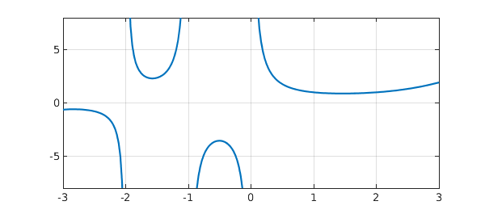
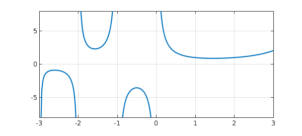
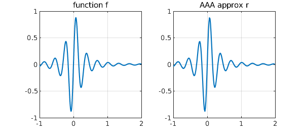
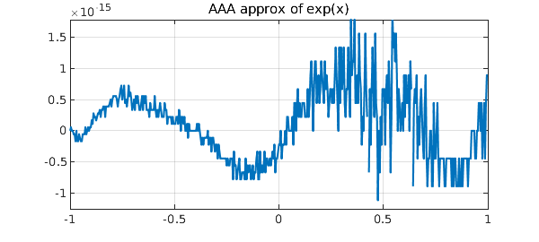
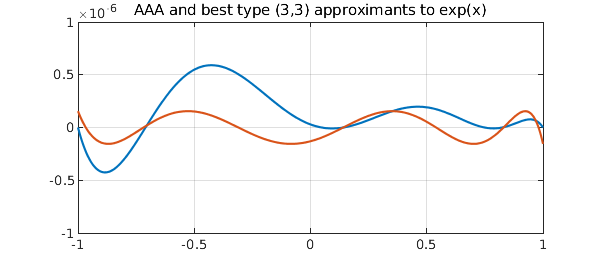
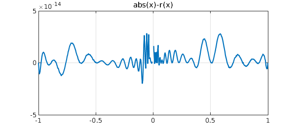
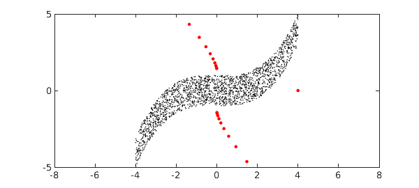

1. A new kind of rational approximation
Chebfun has a number of methods for rational approximation of a function on an interval, including ratinterp, remez, cf, and chebpade; see the example "Eight shades of rational approximation". For rational approximation on the unit circle, one can use ratinterp with the 'unitroots' flag, and for rational approximation based on a Taylor series at a point, there is padeapprox. Chebfun Version 5.6.0 introduces another method, AAA approximation, which is the most general of all, applying by default on an interval but equally well on a general set in the real line or complex plane. The code is called aaa.
We will not describe the mathematics here except to say that aaa returns a function handle corresponding to a type $(m-1,m-1)$ rational function $r$ represented as a barycentric quotient: a ratio of one $m$-term partial fraction divided by another, both with the same poles. This representation is extremely flexible and numerically well-behaved, avoiding completely any representation of numerator or denominator polynomials. See [1] for details.
2. Approximation on an interval
If no approximation set is specified, aaa works on a real interval. For example, suppose we write
r = aaa(@gamma);
The result is a function handle for a rational function that approximates $\Gamma(z)$ on $[-1,1]$. We can plot it with ezplot and get a pretty good result!
h = ezplot(r); axis([-3 3 -8 8]), grid on, title(' '), xlabel(' ')
LW = 'linewidth'; MS = 'markersize';
set(h,LW,2)

To learn more about the approximation we can output the poles and residues as well as the function handle. The AAA approximant is normally of type $(m-1,m-1)$ for some value $m\ge 1$, and here we see that the approximant is of type $(6,6)$.
format short
[r,pol,res] = aaa(@gamma);
disp(' poles residues')
disp([pol res])
poles residues 3.9834 + 1.2129i 0.2984 - 1.9200i 3.9834 - 1.2129i 0.2984 + 1.9200i -3.4613 + 0.0000i -0.1990 + 0.0000i -1.9959 + 0.0000i 0.4876 + 0.0000i -1.0000 + 0.0000i -1.0000 + 0.0000i 0.0000 + 0.0000i 1.0000 + 0.0000i
Note that the poles at $0$ and $-1$ with their residues $1$ and $-1$ have been closely captured, and the pole at $-2$ with residue $0.5$ is approximately captured. If we approximate on $[-2,2]$ rather than the default $[-1,1]$, the type increases to $(7,7)$ and the approximant is a close match to the gamma function in the interval $[-3,3]$ displayed.
[r,pol,res] = aaa(@gamma,'dom',[-2,2]);
disp(' poles residues')
disp([pol res])
h = ezplot(r); axis([-3 3 -8 8]), grid on, title(' '), xlabel(' ')
set(h,LW,2)
poles residues 3.6952 + 1.6173i 0.5067 - 0.7977i 3.6952 - 1.6173i 0.5067 + 0.7977i 3.7682 + 0.0000i -0.9543 + 0.0000i -2.9760 + 0.0000i -0.1512 + 0.0000i -2.0000 + 0.0000i 0.5000 + 0.0000i 0.0000 + 0.0000i 1.0000 + 0.0000i -1.0000 + 0.0000i -1.0000 + 0.0000i

Instead of a function handle, we can pass a chebfun to aaa for approximation. For example, here are the function $f(x) = \sin(20x)/(1+25x^2)$ and its AAA approximant on $[-1,2]$:
x = chebfun('x',[-1 2]);
f = sin(20*x)./(1+25*x.^2);
subplot(1,2,1), plot(f), grid on, ylim([-1 1])
title('function f')
[r,pol] = aaa(f);
subplot(1,2,2), ezplot(r,[-1 2]), grid on, ylim([-1 1])
title('AAA approx r'), xlabel(' ')

The approximation has type $(31,31)$,
length(pol)
ans =
31
and the inner two poles closely match the exact values $\pm 0.2i$.
format long, pol(abs(pol)<1)
ans = 0.000000000000102 + 0.199999999999571i 0.000000000000102 - 0.199999999999571i
3. Approximations of restricted type (n,n)
In these examples aaa has attempted to find an approximation to full precision (actually 13 digits of relative accuracy). Here is the error curve for an approximation of this kind to $e^x$ on $[-1,1]$:
r = aaa(@exp);
clf, ezplot(@(x) exp(x)-r(x),[-1 1]), grid on
title('AAA approx of exp(x)'), xlabel(' ')

Alterntatively, we can ask aaa to find approximations of lower type or accuracy by specifying values of 'mmax' or 'tol', respectively. For example, here is the error curve for the type $(3,3)$ AAA approximant to $e^x$. The error curve for best type $(3,3)$ approximation is shown for comparison.
f = chebfun('exp(x)');
r = aaa(@exp,'mmax',4);
ezplot(@(x) exp(x)-r(x),[-1,1]), grid on, xlabel(' ')
title('AAA and best type (3,3) error curves')
[p,q,rbest] = remez(f,3,3); hold on
ezplot(@(x) f(x)-rbest(x),[-1,1]), hold off
grid on, ylim(1e-6*[-1 1]), xlabel(' ')
title('AAA and best type (3,3) approximants to exp(x)')
Warning: This command is deprecated. Use minimax instead.

In this example, the best approximant is more accurate, but computation of best approximations is a much more fragile process, easily broken, and restricted in Chebfun to real intervals. An example of a more difficult problem on a real interval is the approximation of $|x|$ on $[-1,1]$. Here aaa does a pretty good job, issuing a message indicating that one Froissart doublet (spurious pole-zero pair) has been removed along the way. A warning indicates that the desired tolerance has not been achieved, though it has come pretty close.
r = aaa(@abs);
ezplot(@(x) abs(x)-r(x),[-1,1]), grid on
ylim(5e-14*[-1 1]), xlabel(' ')
Warning: Function not resolved using 16385 pts.

4. Approximation in the complex plane
The true power of AAA approximation lies in its ability to work on arbitrary domains in the complex plane. For example, here we make a set $Z$ consisting of 2000 random points in a moustache shape. Then we approximate $f(z) = (2+z^2)^{1/2}/(z-4)$ on $Z$ and plot the poles.
npts = 2000; rng(0) X = 8*rand(npts,1)-4; Y = 2*rand(npts,1) - 1 + X.^3/16; Z = X + 1i*Y; plot(Z,'.k',MS,3), ylim([-5 5]), axis([-8 8 -5 5]), hold on ff = @(z) sqrt(2+z.^2)./(z-4); [r,pol] = aaa(ff,Z); plot(pol,'.r',MS,14), hold off

Here we check the approximation at $5+5i$, $5$, and $5-5i$:
disp([ff(5+5i) r(5+5i); ff(5) r(5); ff(5-5i) r(5-5i)])
Column 1 1.138695267175776 - 0.792456849446122i 5.196152422706632 + 0.000000000000000i 1.138695267175776 + 0.792456849446122i Column 2 1.138695267218005 - 0.792456849405676i 5.196152429259934 - 0.000000005054655i 1.135686390087262 + 0.790754347086453i
5. References
[1] Y. Nakatsukasa, O. Sète, and L. N. Trefethen, The AAA algorithm for rational approximation, SIAM J. Sci. Comput., 40 (2018), A1494-A1522.